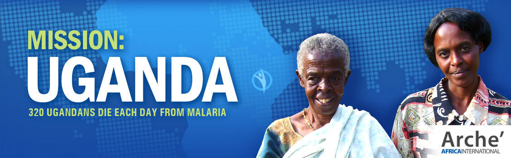

Children & Education
Student support, mentoring, school partnerships, and accountability for sponsorship or education funds.
Faith-rooted nonprofit ministry for community care, partnership, and Gospel-centered service.

Programs
The old site moved between water, health, children, income, and ministry. This program map turns that archive into a clear operating framework for the rebuilt nonprofit.
Student support, mentoring, school partnerships, and accountability for sponsorship or education funds.
Repairing wells, training local stewards, and improving clean water access where unsafe water creates risk.
Medical supply coordination, midwife support, birthing care, and volunteer health specialists.
Small business support for motivated individuals and families seeking sustainable income.
Prayer, Bible distribution, teaching, and encouragement in partnership with local pastors and churches.
Hospitals, churches, advisors, donors, volunteers, and nonprofits working from a shared mission.
Where We Work
Archived focus: medical, trauma, and birthing facility needs.
Archived focus: clean water, wells, and micro-enterprise.
Archived focus: orphanage relationships and local ministry support.
Later posts referenced Kenya, Pakistan, and Bible outreach partnerships.
Project Standard